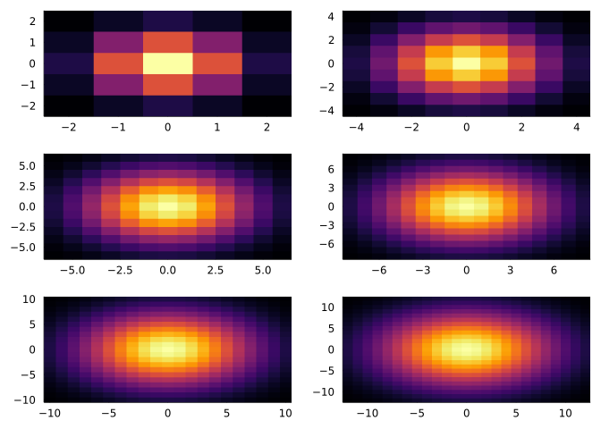

Code
using Images
using PlotsStart with a blur:
For each pixel, take the average of the pixels around it (or a weighted sum of the pixels around it.)
The resulting values are a convolution of two grids (combining two functions to get a new function.) A blur would be a convolution with a gaussian kernel: take a larger image, and replace the value of each pixel with the sum of the values in the kernel times the values of the corresponding surrounding pixels.
K = \begin{bmatrix} 0.003 & 0.013 & 0.022 & 0.013 & 0.003 \\ 0.013 & 0.060 & 0.098 & 0.060 & 0.013 \\ 0.022 & 0.098 & 0.162 & 0.098 & 0.022 \\ 0.013 & 0.060 & 0.098 & 0.060 & 0.013 \\ 0.003 & 0.013 & 0.022 & 0.013 & 0.003 \end{bmatrix} \tag{1}
Equation 1 shows a sample 5x5 gaussian kernel.
The gaussian is a particularly nice curve to take since the sum of the area under the curve is 1.
Let’s start coding up some examples:
using Images
using PlotsHere’s the image we’ll use today.

download("https://unsplash.com/photos/yMSecCHsIBc/download?ixid=MnwxMjA3fDB8MXxzZWFyY2h8NXx8Y2F0fGVufDB8fHx8MTY1NDUxNzk5MA&force=true&w=640", "./coolcat.jpg")
coolcat = load("./coolcat.jpg")
@show size(coolcat);size(coolcat) = (853, 640)Now let’s make a gaussian:
kernel = Kernel.gaussian((1,1))5×5 OffsetArray(::Matrix{Float64}, -2:2, -2:2) with eltype Float64 with indices -2:2×-2:2:
0.00296902 0.0133062 0.0219382 0.0133062 0.00296902
0.0133062 0.0596343 0.0983203 0.0596343 0.0133062
0.0219382 0.0983203 0.162103 0.0983203 0.0219382
0.0133062 0.0596343 0.0983203 0.0596343 0.0133062
0.00296902 0.0133062 0.0219382 0.0133062 0.00296902“5x5 OffsetArray” means that [0,0] is actually in the center of the array.
Here’s what the kernel looks like at a couple of different sizes:
heatmaps = []
for i in 1:6
kerneli = Kernel.gaussian((i,i))
bounds = size(kerneli)[1] ÷ 2
boundsrange = -bounds:bounds
push!(heatmaps, heatmap(boundsrange,boundsrange,kerneli, legend=false))
end
plot(heatmaps..., layout =(3,2))
Note that the sum of the kernel is 1, so our image shouldn’t get any lighter or darker under the convolution.
When you convolve the kernel and the image, the kernel “marches across” the image, replacing each value with the elementwise multiplication of the values in the kernel with the corresponding values in the image.
Using a kernel that adds the values around the center to the center gives a blurrier image (averaging the pixels around it with the center pixel). Using a kernel that subtracts the values of the surrounding pixels gives a sharper image.
We need a convolution function. That
To do edge detection, use a kernel that subtracts the top half from the bottom half, or vice versa.
@show horEdgeKern = Kernel.sobel()[1];
@show vertEdgeKern = Kernel.sobel()[2];horEdgeKern = (Kernel.sobel())[1] = [-0.125 -0.25 -0.125; 0.0 0.0 0.0; 0.125 0.25 0.125]
vertEdgeKern = (Kernel.sobel())[2] = [-0.125 0.0 0.125; -0.25 0.0 0.25; -0.125 0.0 0.125]The horizontal edge detection kernel looks like this:
K = \begin{bmatrix} -0.125 & 0.0 & 0.125 \\ -0.25 & 0.0 & 0.25 \\ -0.125 & 0.0 & 0.125 \\ \end{bmatrix}
And the vertical edge detection kernel is the transpose of the horizontal.
When you get values that change above and below the center of the kernel, the edge detection kernels return either a positive or a negative number.
A convolutional neural network uses a machine to learn which kernel it should use to get the desired output.
In the mathematical context, you generally rotate the convolutional kernel 180° before you apply it.
Consider:
\left( k_0 + k_1x + k_2x^2\right)\left(a_0 + a_1x + a_2x^2 + a_3x^3 + a_4x^4 \cdots \right)
The constant for the x^3 term in this expression is
k_2a_1 + k_1a_2 + k_0a_3 \tag{2}
The total multiplication is:
\begin{split} (k_0a_0)x^0 &+\\ (k_1a_0 + k_0a_1)x^1 &+\\ (k_2a_0 + k_1a_1 + k_0a_2)x^2 &+\\ (k_2a_1 + k_1a_2 + k_0a_3)x^3 &+\\ (k_2a_2 + k_1a_3 + k_0a_4)x^4 &+\\ (k_2a_3 + k_1a_4 + k_0a_5)x^5 &+\\ &\vdots \end{split} \tag{3}
You could describe the polynomial multiplication in Equation 3 as a convolution between the terms of \left( k_0 + k_1x + k_2x^2\right) and \left(a_0 + a_1x + a_2x^2 + a_3x^3 + a_4x^4 \cdots \right)! But in order for that to work, you first have to rotate the k polynomial by 180 degrees, so that k_2x^2 comes first and k_0 comes last.
This becomes a convention.
Pixel data isn’t actually stored as a multiple of powers of x, but it is common to see pixel data as a fourier transform, in which case you would be multiplying the kernel by
\left( a_0 + a_1\left(e^{2\pi i f}\right) + a_2\left(e^{2\pi i f}\right)^2 + a_3\left(e^{2\pi i f}\right)^3 + a_4\left(e^{2\pi i f}\right)^4 + \cdots \right) \tag{4}
Remark. Note about fourier transforms: They’re very analogous to power series, in that we’re multiplying by something we have successive powers of. When we multiply two fourier series, the result corresponds to convolving the original terms of the series.
So we can take the fourier transforms of our image and our kernel, multiply them together, and detransform. The multiplication of the two fourier transforms is equivalent to convolving by the (rotated) kernel.